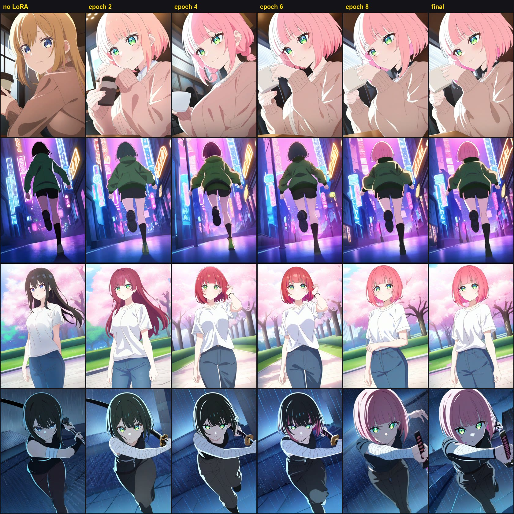
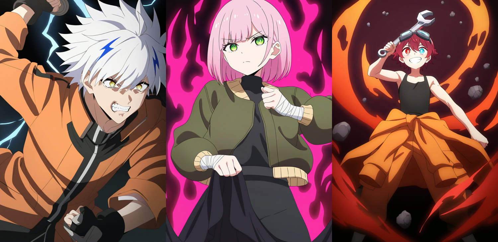
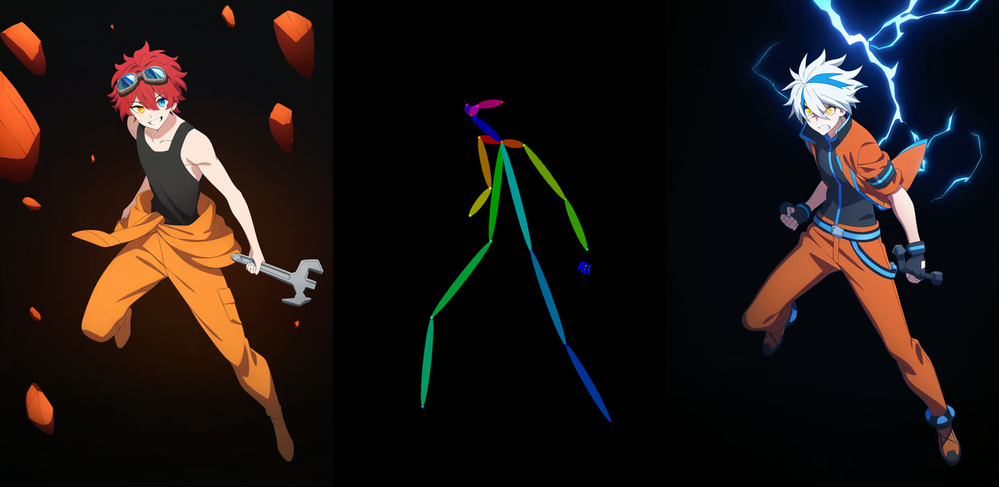
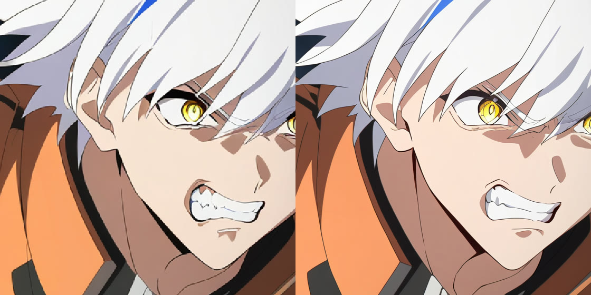
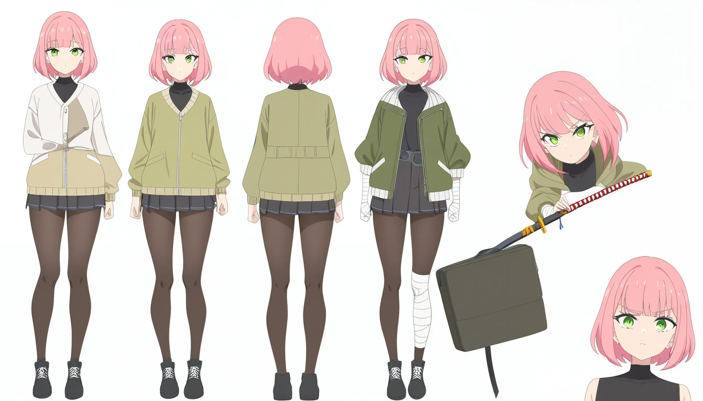
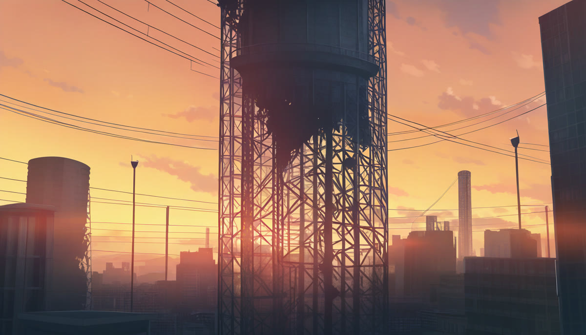

A local AI anime studio. Original characters, consistent in every shot, designed and animated fully offline on an 8 GB gaming laptop.
AnimeAI chains open-source image, video, language and audio models into one production pipeline for 2D Japanese-style anime in a modern shōnen action look: bold lineart, cel shading, dramatic lighting, dynamic camera.
Original characters, turnaround sheets and background plates from text.
WORKINGTrain a character once in ~46 min; one trigger word brings them back in any scene.
WORKINGCopy the exact pose of any reference drawing onto any character.
WORKINGAnime-specific 4× upscaling plus a detail pass for clean final keyframes.
WORKINGKeyframes become 2–5 s clips, then are interpolated and upscaled.
NEXTLocal LLM storyboards, voices, music, SFX and an automatic rough cut.
PLANNEDEvery stage is driven through ComfyUI's HTTP API by small Python scripts. Workflows are generated in code and stored as JSON, so a batch job can fill in prompts, seeds and sizes and render hundreds of shots unattended.
A local language model turns a premise into a short script and a machine-readable shot list: camera, action, dialogue, prompts.
Concepts, turnaround sheets and backgrounds from the NoobAI-XL anime model.
Generate 48 varied images → curate → auto-caption → train an 8 GB-safe LoRA.
Character LoRA + ControlNet pose for each shot's key moment.
4× anime upscaler, then a low-denoise pass for crisp lines.
Animate keyframes into short clips; first + last frame control for action beats.
Local text-to-speech, music generation and video-to-audio effects.
RIFE interpolation, then an ffmpeg rough cut exported for DaVinci Resolve.
A base model draws a new person each time. After 46 minutes of training on 37 curated images, the trigger word sumi_ink brings back the same character in scenes she was never trained on, while her clothes still follow the prompt.

Rows: café · neon-city run · casual park · rainy sword fight. Columns: no LoRA → training epochs 2, 4, 6, 8 → final. The prompts never mention hair or eye colour.
Four different people: blonde, black-haired, brunette.
Learning, but unstable; hair drifts to red or black in dark scenes.
Pink bob, blunt bangs, green eyes, reliably, in all four scenes.

Three original characters designed from text: storm courier, ink swordswoman, gravity mechanic.

Pose control: reference → extracted skeleton → a different character in the same pose.

Refine + upscale: 832×1216 → 1248×1824 with cleaner lines.

Turnaround reference sheet.

Background plate, no characters.
Measured on an Acer Nitro V 16: RTX 4060 Laptop (8 GB), Core i5-14450HX, 16 GB single-channel DDR5.
| Task | Output | Time | Peak VRAM |
|---|---|---|---|
| Anime keyframe | 832×1216, 28 steps | 18 s | 7.5 GB |
| Pose-controlled keyframe | OpenPose + ControlNet | 51 s | 7.3 GB |
| Refine + 4× upscale | → 1248×1824 | 55 s | 7.7 GB |
| Character LoRA training | 1,480 steps, rank 16 | 46 min | 5.8 GB |
The vendor's quiet fan profile capped the GPU at 1.2 GHz and ~20 W at only 58 °C. Switching to the Turbo profile raised it to 2.4 GHz and up to 91 W.
fp8 base weights, UNet-only LoRA training, cached latents and text-encoder outputs, tiled VAE decode, dynamic VRAM loading.
--highvram with ControlNet exceeds 8 GB and spills into shared memory: 225 s per step instead of ~1 s. Avoided.
| Layer | Tool | Licence |
|---|---|---|
| Engine | ComfyUI v0.37 portable · PyTorch 2.13 · CUDA 13 | GPL-3.0 |
| Anime model | NoobAI-XL v1.1 (SDXL / Illustrious family) | FAIPL-1.0-SD |
| Pose / structure | xinsir ControlNet Union ProMax · OpenPose | Apache-2.0 |
| Upscaling | 4x-AnimeSharp · RealESRGAN x4plus anime | CC BY-NC-SA · BSD-3 |
| Training | kohya-ss sd-scripts v0.12 · WD14 tagger v3 | Apache-2.0 |
| Video (next) | Wan 2.2 TI2V-5B / I2V-14B GGUF · RIFE | Apache-2.0 · MIT |
| Automation | Python · ComfyUI HTTP API · ffmpeg | MIT (this project) |
Original characters only; no models that reproduce existing anime characters. Model licences are respected: FAIPL derivatives stay open, and the commercial-safe upscaler is used for monetised work. Voice cloning only with voices the author has rights to.
AI & Computer Engineering student at Tongmyong University, Busan. Builds end-to-end systems across AI pipelines, e-commerce and desktop apps.